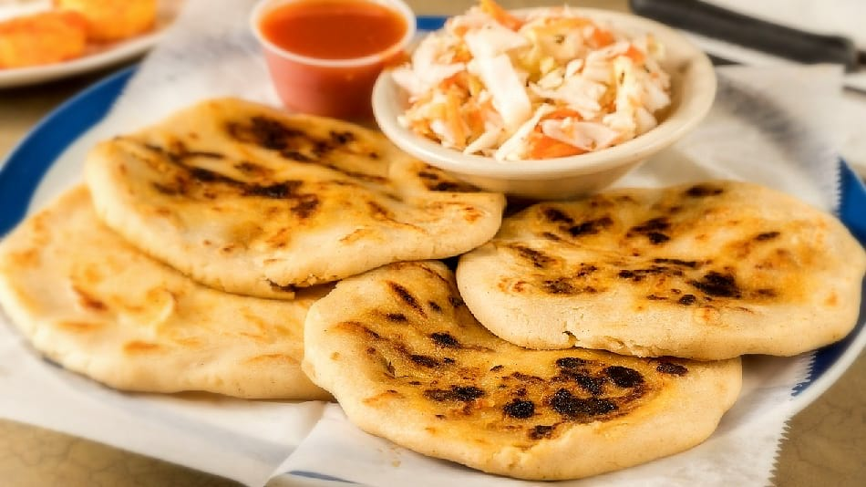

Las Imperdibles Pupusas
Publicado por Christopher
Cruz
La pupusa es una tortilla gruesa a base de masa de maíz o de arroz rellena con uno o más
ingredientes, como queso, chicharrón, ayote, frijoles refritos, loroco, etc. Por su
tradición, versatilidad y bajo costo, es una de las comidas más difundidas en El
Salvador.
Las pupusas se han convertido en un símbolo de El Salvador. Por las calles de las
localidades salvadoreñas es común encontrar pupuserías, puntos de venta de pupusas, e
incluso pupusódromos.

Yuca Frita (y yuca salcochada)
Publicado por Christopher Cruz
Es un plato típico de la gastronomía popular, aunque no se considera como un plato
principal y fuerte, es consumido como un entremés o bocadillo es muy común encontrar
lugares donde lo comercializan los principales son los comúnmente llamados mercados.
La yuca es una delicia de cualquiera de estas dos maneras de preparación y puede ir
acompañada de una infinidad de ingredientes, los cuales pueden ser: chicharrones,
pepescas, salsa de tomate, curtido, tomate, pepino; sólo se necesita creatividad para
combinar cualquier sabor con este delicioso platillo, ya que con la mayoría de los
ingredientes sabe muy bien. Así mismo también hay algo que la hace especias, cuando se
compra lista para comer se encuentra envuelta en una hoja de huerta, eso le da un sabor
especial y refrescante a este delicioso platillo.